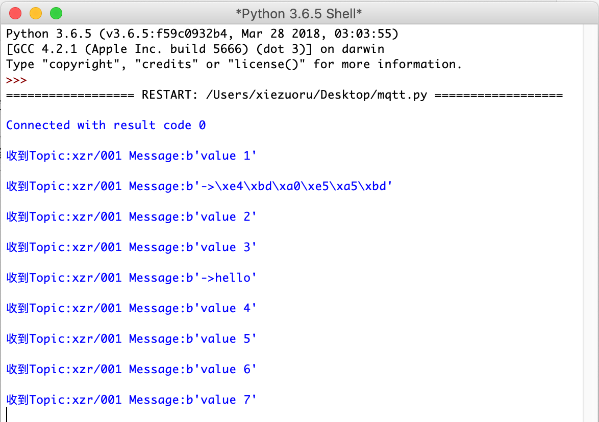
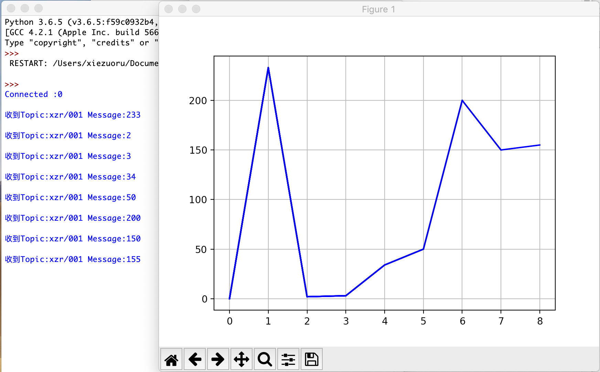

8. Python¶
8.2. 参考代码¶
代码功能
连接服务器，发送和订阅消息。
# coding=utf-8
import threading
import paho.mqtt.client as mqtt
import time
SERVER = "127.0.0.1" #MQTT服务器IP
CLIENT_ID = "79afcb3bdb44b7aa" #在SIoT上，CLIENT_ID可以留空
TOPIC = 'xzr/001' #“topic”为“项目名称/设备名称”
username='siot' #用户名
password='dfrobot' #密码
class MqttClient:
client = mqtt.Client(CLIENT_ID)
def __init__(self, host, port):
self._host = host
self._port = port
self.client.on_connect = self._on_connect
self.client.on_message = self._on_message
def connect(self, username, password):
self.client.username_pw_set(username, password)
self.client.connect(self._host, self._port, 60)
def publish(self, topic, data):
self.client.publish(str(topic), str(data))
def loop(self, timeout=None):
thread = threading.Thread(target=self._loop, args=(timeout,))
# thread.setDaemon(True)
thread.start()
def _loop(self, timeout=None):
if not timeout:
self.client.loop_forever()
else:
self.client.loop(timeout)
def _on_connect(self, client, userdata, flags, rc):
print("\nConnected with result code " + str(rc))
client.subscribe(TOPIC)
def _on_message(self, client, userdata, msg):
print("\n收到Topic:" + str(msg.topic) + " Message:" + str(msg.payload))
if __name__ == '__main__':
tick = 0 # 要发送的数字
client = MqttClient(SERVER, 1883)
client.connect(username,password)
client.publish(TOPIC, 'hello')
client.loop()
while True:
client.publish(TOPIC,"value %d"%tick)
time.sleep(5) #隔5秒发送一次
tick = tick+1
测试效果
8.3. 参考代码（动态绘制图表）¶
代码功能
连接服务器，根据订阅的消息，动态绘制出图表。
需要安装 matplotlib
参考命令：python3.6 -m pip install matplotlib
from pylab import *
import threading
import paho.mqtt.client as mqtt
import time,random
SERVER = "127.0.0.1" #MQTT服务器IP
CLIENT_ID = "79afcb3bdb44b7aa" #在SIoT上，CLIENT_ID可以留空
TOPIC = 'xzr/001' #“topic”为“项目名称/设备名称”
username='siot' #用户名
password='dfrobot' #密码
class MqttClient:
client = mqtt.Client(CLIENT_ID)
def __init__(self, host, port):
self._host = host
self._port = port
self.client.on_connect = self._on_connect
self.client.on_message = self._on_message
def connect(self, username, password):
self.client.username_pw_set(username, password)
self.client.connect(self._host, self._port, 60)
def publish(self, topic, data):
self.client.publish(str(topic), str(data))
def loop(self, timeout=None):
thread = threading.Thread(target=self._loop, args=(timeout,))
# thread.setDaemon(True)
thread.start()
def _loop(self, timeout=None):
if not timeout:
self.client.loop_forever()
else:
self.client.loop(timeout)
def _on_connect(self, client, userdata, flags, rc):
print("\nConnected :" + str(rc))
client.subscribe(TOPIC)
def _on_message(self, client, userdata, msg):
print("\n收到Topic:" + str(msg.topic) + " Message:" + str(int(msg.payload)))
showplt(int(msg.payload)) #开始绘图
def showplt(val):
global x,y,i
grid(True)
plt.ion()
x.append(i)
y.append(val)
ax.plot(x,y,'b')
plt.pause(0.0001)
plt.show()
i +=1
if __name__ == '__main__':
global x,y,i,fig, ax
fig, ax= plt.subplots()
i=0
x=[]
y=[]
showplt(0)
client = MqttClient(SERVER, 1883)
client.connect(username,password)
client.loop()
测试效果
